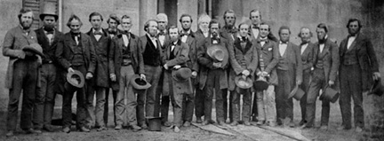

Checkpoint: Oberlin
Now for the town of Oberlin, Ohio. Oberlin is perhaps most well-known for its importance in the abolition movements in the early 1800s.
The town was in fact conceived as an integrated place, an extremely rare occurrence in 1833, when this town was founded. In fact, according to
the National Library of Australia, black students were
allowed to attend Oberlin College as early as 1835, 26 years prior to the start of the Civil War. This article also says that on top of that, it began admitting women in 1837, and was
one of the first colleges to do so, and later, the town had become an active part of the
underground railroad, and was extremely helpful in getting escaped slaves to freedom. The town of Oberlin was in fact so aggressively in favor
of abolition that in 1858, when laws allowing disallowing slave catchers from extraditing slaves back to the south were repealed, and a slave by the name
of John Price was captured and temporarily held in the neighboring town of Wellington, citizens from Oberlin, including white and black people,
set out to save Price. They succeeded, and smuggled Price to Canada, but authorities were not pleased with the rescuers' actions, and had them arrested,
though all but two were able to avoid getting sentenced and the other two received light sentences. The picture above features this group standing outside of
the county jailhouse (information coutesy of New York Times, image courtesy of
See page for author / Public).
{kind=link}
To further explore the city of Oberlin, click here
Pedaling for Parkinson's claims no affiliation with Google Street View